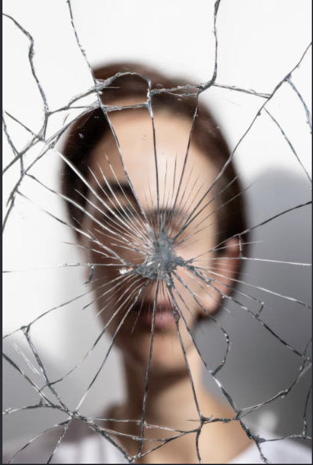
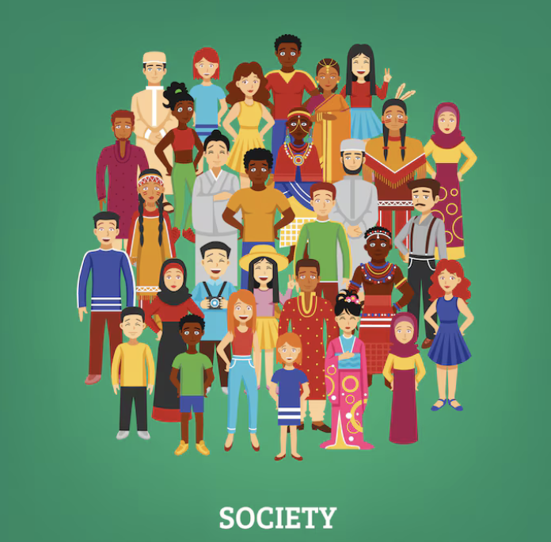

The Unfairness of Pretty Privilege
Pretty privilege is the unearned advantage given to people who match societal beauty standards. While some people pretend it is harmless, it is actually a deeply unfair system that rewards people for things they were simply born with, rather than their hard work, intelligence, or character.
In today's world, appearance should never dictate how a person is valued. In this post, I want to explain why pretty privilege is harmful and why we need to stop judging people by their looks.

Figure 1: Society puts way too much value on physical appearance.
Why Pretty Privilege is Toxic
Here are the main reasons why this privilege creates inequality in daily life:
- Unfair Job Hiring: Qualified workers get passed over for less qualified candidates just because of physical appearance.
- Low Self-Esteem: It forces people to feel insecure and spend thousands of dollars trying to fit artificial beauty standards.
- Shallow Relationships: It encourages people to value surface-level looks instead of kindness, honesty, and intellect.
- Reinforces Biases: It privileges certain Eurocentric features while discriminating against others.
How We Can Fight Against It
We need to active struggle against this shallow culture by following these steps:
- Stop giving special treatment to people just because of how they look.
- Judge classmates and co-workers strictly by their actions and effort.
- Compliment people on their achievements and skills instead of physical appearance.
- Call out lookism and superficial judgments when you see them happening.
Shallow Assumptions vs Actual Reality
This table exposes the false stereotypes created by pretty privilege:
| Feature | Shallow Perception | The Real Truth |
|---|---|---|
| Competence | Attractive people are wrongly assumed to be better leaders. | Look has zero connection to skill, logic, or intelligence. |
| Morality | Good-looking people are assumed to be nicer and more honest. | Character is built through actions, not genetic luck. |
| Work Ethic | Unattractive people are unfairly judged as lazy or careless. | Dedication depends entirely on individual effort. |

Figure 2: True equality means judging people by character, not appearance.
Page Navigation and Resources
Use these links to navigate or learn more:
- Go to Introduction Section (Internal Anchor Link)
- Go to Stereotypes Comparison Table (Internal Anchor Link)
- Read more on Lookism on Wikipedia (External Link)
- Search articles on Google Search (External Link)
Conclusion
Pretty privilege is an unfair form of bias that hurts real merit and equality. We must move past superficial judgments and value people for who they are on the inside. A fair society judges people by their mind, talent, and character—never by their looks.